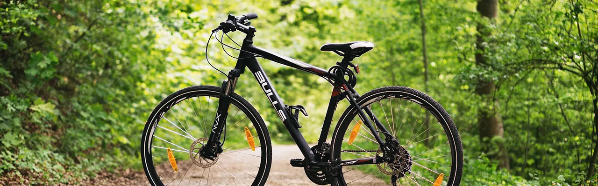

品牌簡介
導入專業碳足跡計算工具，全面公開每趟行程的實測減碳數據與綠色供應鏈選擇,我們堅持透明化營運，從低碳交通、永續旅宿到在地蔬食餐桌，為您精算環境效益。建立高度顧客信任感，樹立專業綠色品牌形象，引領無痕永續旅遊新風尚。 個輕鬆落實的低碳打包與出行技巧 減碳不代表放棄舒適與質感,本文指導旅客如何選擇多功能機能服飾（如防風透氣衣物）、攜帶耐用環保餐具與水壺，並利用大眾運輸與雙鐵接駁（鐵路+單車），有效降低每一次旅程的個人碳足跡。

雙鐵漫遊
搭火車騎單車，探索台灣最美的綠色山海線 遠離自駕塞車與廢氣排放,精選花東與北海岸經典「雙鐵接駁」路線，體驗搭乘台鐵區間車搭配電輔車漫遊綠色隧道與海岸線,享受深度慢速旅遊，細細品味在地風土。

產地到餐桌
品嚐零公里碳足跡的在地旬味料理 食物里程也是影響碳排放的關鍵,本文帶領讀者走進嚴選在地當季食材的低碳餐廳與有機農場，介紹地產地消、蔬食為主的質感佳餚，在品嚐美味的同時，減輕大自然的負擔。

綠色旅宿開箱
兼具節能設計與極致舒適的永續住宿體驗 不提供一次性塑料備品、採用太陽能綠電與雨水回收系統,開箱兼具自然美學與環保認證的質感旅宿，打破「環保飯店一定較為簡陋」的刻板印象，享受高品質與環境友善共存的假期。